Regional Specialties Recipes
Piedmontese Vitello Tonnato
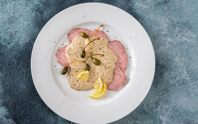Thinly sliced veal served with a creamy tuna and caper sauce, a classic dish from Piedmont.
Ingredients:
- Veal roast
- Canned tuna
- Anchovy fillets
- Capers
- Lemon juice
- Olive oil
- Mayonnaise
Instructions:
1. Cook the veal until tender, then let it cool and slice thinly.
2. Blend canned tuna, anchovies, capers, lemon juice, olive oil, and mayonnaise to make the sauce.
3. Arrange the veal slices on a serving platter.
4. Pour the sauce over the veal.
5. Chill in the refrigerator for a few hours before serving.
Neapolitan Pizza Margherita
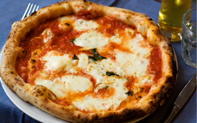A simple pizza topped with tomato sauce, mozzarella cheese, fresh basil leaves, and a drizzle of olive oil, originating from Naples.
Ingredients:
- Pizza dough
- Tomato sauce
- Mozzarella cheese
- Fresh basil leaves
- Olive oil
- Salt
Instructions:
1. Preheat your oven to its highest temperature.
2. Roll out the pizza dough and place it on a baking sheet.
3. Spread tomato sauce over the dough.
4. Tear the mozzarella cheese into pieces and distribute evenly over the sauce.
5. Arrange fresh basil leaves on top.
6. Drizzle with olive oil and sprinkle with salt.
7. Bake in the preheated oven until the crust is golden brown and crispy.
8. Serve hot.
Venetian Sarde in Saor
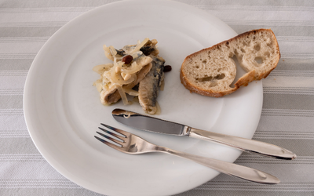Sweet and sour sardines marinated in vinegar with onions, pine nuts, and raisins, a traditional Venetian appetizer.
Ingredients:
- Fresh sardines
- White wine vinegar
- Onions
- Pine nuts
- Raisins
- Flour
- Olive oil
Instructions:
1. Clean and fillet the sardines, then coat them lightly in flour.
2. Fry the sardines in olive oil until golden brown, then set aside.
3. In the same pan, sauté sliced onions until caramelized.
4. Add white wine vinegar, pine nuts, and raisins to the pan.
5. Simmer until the mixture thickens slightly.
6. Layer the sardines in a dish and pour the vinegar mixture over them.
7. Let marinate in the refrigerator for at least a few hours before serving.
Ligurian Trofie al Pesto
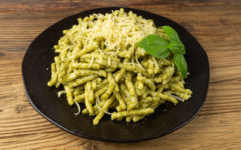Hand-rolled pasta served with a fresh basil pesto sauce, a Ligurian specialty.
Ingredients:
- Trofie pasta
- Fresh basil leaves
- Pine nuts
- Parmesan cheese
- Garlic
- Olive oil
- Salt
Instructions:
1. Cook the trofie pasta in boiling salted water until al dente.
2. Meanwhile, make the pesto sauce by blending fresh basil leaves, pine nuts, Parmesan cheese, garlic, and olive oil until smooth.
3. Drain the cooked pasta and toss it with the pesto sauce.
4. Serve hot, optionally garnished with extra Parmesan cheese and a drizzle of olive oil.
Sardinian Malloreddus alla Campidanese
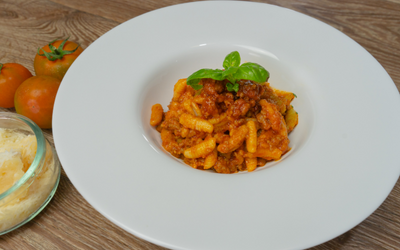Small ridged pasta served with a rich tomato and sausage sauce, a traditional Sardinian dish.
Ingredients:
- Malloreddus pasta
- Tomatoes
- Italian sausage
- Onion
- Garlic
- Red wine
- Pecorino cheese
- Olive oil
- Salt
- Pepper
Instructions:
1. Cook the malloreddus pasta in boiling salted water until al dente.
2. Meanwhile, cook Italian sausage in olive oil until browned.
3. Add chopped onion and minced garlic to the pan and sauté until softened.
4. Deglaze with red wine and cook until reduced.
5. Stir in chopped tomatoes and simmer until thickened.
6. Toss the cooked pasta with the sausage sauce.
7. Serve hot, optionally garnished with grated Pecorino cheese.
Puglian Orecchiette alle Cime di Rapa
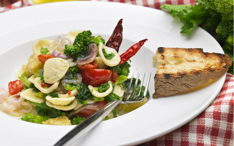Ear-shaped pasta served with broccoli rabe, garlic, chili flakes, and olive oil, a classic dish from Puglia.
Ingredients:
- Orecchiette pasta
- Broccoli rabe
- Garlic
- Chili flakes
- Olive oil
- Salt
- Parmesan cheese
Instructions:
1. Cook the orecchiette pasta in boiling salted water until al dente.
2. Meanwhile, blanch the broccoli rabe in boiling water, then drain and chop.
3. Sauté minced garlic and chili flakes in olive oil until fragrant.
4. Add the chopped broccoli rabe to the pan and cook until tender.
5. Toss the cooked pasta with the broccoli rabe mixture.
6. Serve hot, optionally garnished with grated Parmesan cheese.
Tuscan Ribollita
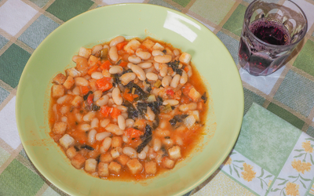A hearty vegetable soup made with cannellini beans, kale, and day-old bread, a Tuscan comfort food.
Ingredients:
- Cannellini beans
- Kale
- Carrots
- Celery
- Onions
- Garlic
- Tomatoes
- Day-old bread
- Vegetable broth
- Olive oil
- Salt
- Pepper
Instructions:
1. Sauté chopped onions, carrots, and celery in olive oil until softened.
2. Add minced garlic and cook until fragrant.
3. Stir in chopped tomatoes and cook until they break down.
4. Add chopped kale and cooked cannellini beans to the pot.
5. Pour in vegetable broth and bring to a simmer.
6. Tear day-old bread into chunks and stir into the soup.
7. Simmer until the bread breaks down and the soup thickens.
8. Season with salt and pepper to taste.
9. Serve hot, optionally garnished with a drizzle of olive oil.
Lombardian Risotto alla Milanese

Creamy saffron-infused risotto made with Arborio rice, onions, white wine, and Parmesan cheese, a signature dish of Milan.
Ingredients:
- Arborio rice
- Saffron threads
- Onion
- White wine
- Parmesan cheese
- Butter
- Vegetable broth
- Olive oil
- Salt
- Pepper
Instructions:
1. Heat vegetable broth in a saucepan and keep warm.
2. Sauté finely chopped onion in olive oil until translucent.
3. Add Arborio rice to the pan and toast until translucent around the edges.
4. Deglaze with white wine and cook until absorbed.
5. Ladle warm broth into the rice, one ladleful at a time, stirring frequently until absorbed.
6. Continue adding broth and stirring until the rice is creamy and cooked al dente.
7. Stir in saffron threads, grated Parmesan cheese, and butter.
8. Season with salt and pepper to taste.
9. Serve hot.
Sardinian Malloreddus alla Campidanese
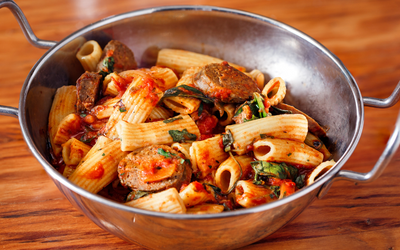Small ridged pasta served with a rich tomato and sausage sauce, a traditional Sardinian dish.
Ingredients:
- Malloreddus pasta
- Tomatoes
- Italian sausage
- Onion
- Garlic
- Red wine
- Pecorino cheese
- Olive oil
- Salt
- Pepper
Instructions:
1. Cook the malloreddus pasta in boiling salted water until al dente.
2. Meanwhile, cook Italian sausage in olive oil until browned.
3. Add chopped onion and minced garlic to the pan and sauté until softened.
4. Deglaze with red wine and cook until reduced.
5. Stir in chopped tomatoes and simmer until thickened.
6. Toss the cooked pasta with the sausage sauce.
7. Serve hot, optionally garnished with grated Pecorino cheese.
Calabrian Spaghetti alla 'Nduja
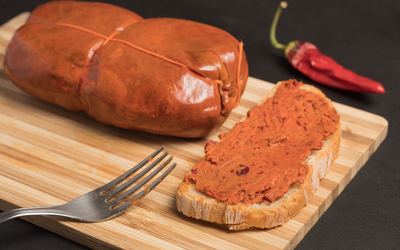Spaghetti tossed in a spicy 'nduja sausage and tomato sauce, a fiery Calabrian specialty.
Ingredients:
- Spaghetti pasta
- 'Nduja sausage
- Tomato passata
- Garlic
- Chili flakes
- Olive oil
- Basil leaves
- Salt
Instructions:
1. Cook the spaghetti pasta in boiling salted water until al dente.
2. Meanwhile, sauté minced garlic and chili flakes in olive oil until fragrant.
3. Add 'nduja sausage to the pan and cook until it breaks down.
4. Stir in tomato passata and simmer until thickened.
5. Toss the cooked pasta with the spicy sauce.
6. Tear fresh basil leaves and sprinkle over the pasta.
7. Serve hot.
Trentino-Alto Adige Canederli
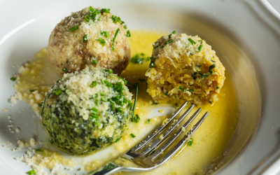Dumplings made with stale bread, eggs, milk, and speck, a traditional dish from the Trentino-Alto Adige region.
Ingredients:
- Stale bread
- Eggs
- Milk
- Speck
- Parmesan cheese
- Parsley
- Butter
- Flour
- Salt
- Pepper
- Nutmeg
Instructions:
1. Soak stale bread in milk until softened, then squeeze out excess liquid.
2. Mix the bread with beaten eggs, diced speck, grated Parmesan cheese, chopped parsley, flour, salt, pepper, and nutmeg.
3. Form the mixture into small dumplings.
4. Cook the dumplings in boiling salted water until they float to the surface.
5. Drain the dumplings and serve hot, optionally topped with melted butter and grated Parmesan cheese.
Emilian Tortellini in Brodo
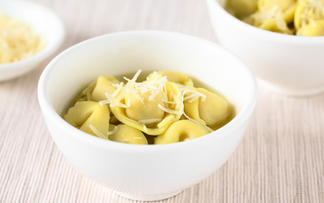Small pasta parcels filled with a mixture of meat, cheese, and herbs, served in a clear broth, a classic dish from Emilia-Romagna.
Ingredients:
- Tortellini pasta
- Meat filling (pork, beef, prosciutto)
- Parmesan cheese
- Nutmeg
- Chicken broth
- Carrots
- Celery
- Onions
- Parsley
- Salt
- Pepper
Instructions:
1. Prepare the meat filling by mixing ground pork, beef, prosciutto, grated Parmesan cheese, nutmeg, salt, and pepper.
2. Roll out fresh pasta dough and cut into small circles.
3. Place a small amount of filling in the center of each circle and fold in half to form a half-moon shape.
4. Bring the two ends of the half-moon together and pinch to seal, forming tortellini.
5. Cook the tortellini in boiling chicken broth until they float to the surface.
6. Serve hot in bowls of chicken broth, optionally garnished with chopped carrots, celery, onions, and parsley.
Venetian Risi e Bisi
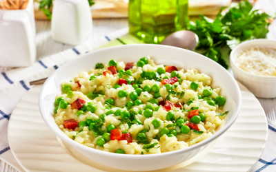A creamy risotto made with fresh peas, pancetta, and Parmesan cheese, a traditional Venetian dish.
Ingredients:
- Arborio rice
- Fresh peas
- Pancetta
- Onion
- White wine
- Chicken broth
- Parmesan cheese
- Butter
- Olive oil
- Salt
- Pepper
Instructions:
1. Sauté finely chopped onion and diced pancetta in olive oil until softened.
2. Add Arborio rice to the pan and toast until translucent around the edges.
3. Deglaze with white wine and cook until absorbed.
4. Ladle warm chicken broth into the rice, one ladleful at a time, stirring frequently until absorbed.
5. When the rice is almost cooked, stir in fresh peas.
6. Continue adding broth and stirring until the rice is creamy and cooked al dente.
7. Stir in grated Parmesan cheese and butter.
8. Season with salt and pepper to taste.
9. Serve hot.
Sardinian Malloreddus with Sausage and Tomato Sauce
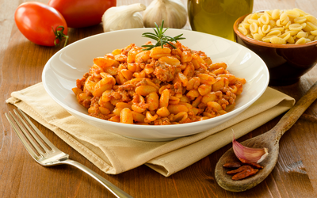Small ridged pasta served with a hearty sausage and tomato sauce, a traditional Sardinian dish.
Ingredients:
- Malloreddus pasta
- Italian sausage
- Onion
- Garlic
- Canned tomatoes
- Red wine
- Pecorino cheese
- Olive oil
- Salt
- Pepper
Instructions:
1. Cook the malloreddus pasta in boiling salted water until al dente.
2. Meanwhile, cook Italian sausage in olive oil until browned.
3. Add chopped onion and minced garlic to the pan and sauté until softened.
4. Deglaze with red wine and cook until reduced.
5. Stir in canned tomatoes and simmer until thickened.
6. Toss the cooked pasta with the sausage sauce.
7. Serve hot, optionally garnished with grated Pecorino cheese.
Napolitan Eggplant Parmigiana
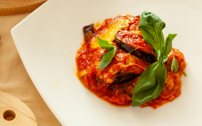Layers of fried eggplant slices, tomato sauce, and cheese baked to perfection, a classic Neapolitan dish.
Ingredients:
- Eggplant
- Tomato sauce
- Mozzarella cheese
- Parmesan cheese
- Bread crumbs
- Eggs
- Garlic
- Basil
- Olive oil
- Salt
- Pepper
Instructions:
1. Slice the eggplant and sprinkle with salt. Let sit for 30 minutes, then rinse and pat dry.
2. Dip eggplant slices in beaten eggs, then coat with breadcrumbs.
3. Fry the eggplant slices in olive oil until golden brown on both sides.
4. Spread tomato sauce in the bottom of a baking dish, then layer fried eggplant slices, mozzarella cheese, and Parmesan cheese.
5. Repeat the layers until all ingredients are used, ending with a layer of cheese on top.
6. Bake in a preheated oven until the cheese is melted and bubbly.
7. Garnish with fresh basil leaves before serving.
Piedmontese Vitello Tonnato
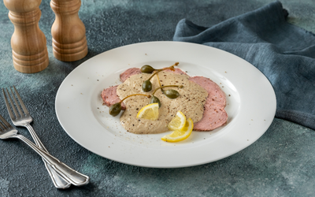Thinly sliced veal served with a creamy tuna sauce, a specialty of the Piedmont region.
Ingredients:
- Veal roast
- White wine
- Chicken broth
- Canned tuna
- Anchovy fillets
- Capers
- Mayonnaise
- Lemon juice
- Olive oil
- Salt
- Pepper
Instructions:
1. Season the veal roast with salt and pepper, then brown it on all sides in a hot skillet.
2. Deglaze the skillet with white wine, then add chicken broth and simmer until the veal is cooked through.
3. Remove the veal from the broth and let it cool completely.
4. In a blender, combine canned tuna, anchovy fillets, capers, mayonnaise, lemon juice, and olive oil. Blend until smooth and creamy.
5. Thinly slice the cooled veal and arrange on a serving platter.
6. Pour the tuna sauce over the veal slices.
7. Chill in the refrigerator for at least 2 hours before serving.
Tuscan Ribollita
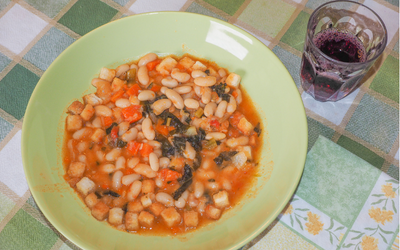A hearty Tuscan soup made with bread, vegetables, beans, and kale, perfect for chilly evenings in Tuscany.
Ingredients:
- Cannellini beans
- Kale
- Carrots
- Celery
- Onion
- Tomatoes
- Garlic
- Crusty bread
- Vegetable broth
- Olive oil
- Salt
- Pepper
Instructions:
1. Cook cannellini beans until tender, then drain and set aside.
2. Sauté chopped onion, carrot, and celery in olive oil until softened.
3. Add minced garlic and chopped tomatoes to the pot and cook until tomatoes break down.
4. Stir in chopped kale and cooked cannellini beans.
5. Pour in vegetable broth and bring to a simmer.
6. Tear crusty bread into chunks and add to the soup.
7. Simmer until the bread breaks down and the soup thickens.
8. Season with salt and pepper to taste before serving.
Venetian Sarde in Saor
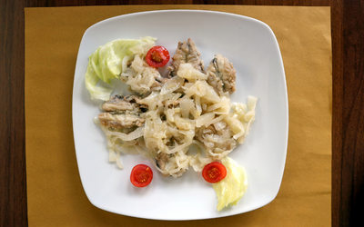Sweet and sour sardines marinated with onions, vinegar, and raisins, a classic Venetian appetizer.
Ingredients:
- Fresh sardines
- Onion
- White wine vinegar
- Sugar
- Raisins
- Flour
- Olive oil
- Salt
- Pepper
Instructions:
1. Clean and fillet fresh sardines, then dredge in flour seasoned with salt and pepper.
2. Fry the sardine fillets in olive oil until golden brown on both sides.
3. In a separate pan, sauté thinly sliced onion until caramelized.
4. Add white wine vinegar, sugar, and raisins to the pan and cook until the mixture thickens.
5. Layer fried sardine fillets and onion mixture in a dish.
6. Marinate in the refrigerator for at least 4 hours before serving.
Calabrian 'Nduja Pizza
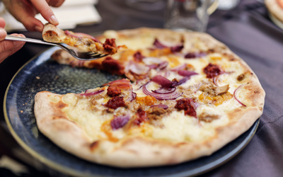'Nduja, a spreadable spicy salami, paired with creamy mozzarella cheese on a crispy pizza crust, a fiery Calabrian specialty.
Ingredients:
- 'Nduja
- Pizza dough
- Mozzarella cheese
- Tomato sauce
- Olive oil
Instructions:
1. Roll out pizza dough into a circle and spread tomato sauce over the surface.
2. Crumble 'nduja over the tomato sauce, distributing evenly.
3. Tear mozzarella cheese into small pieces and scatter over the pizza.
4. Drizzle with olive oil and bake in a preheated oven until the crust is golden and crispy.
5. Serve hot, optionally garnished with fresh basil leaves.
Ligurian Trofie al Pesto
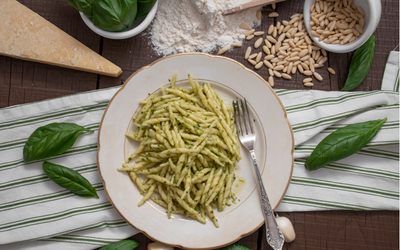Hand-rolled trofie pasta tossed with basil pesto, potatoes, and green beans, a Ligurian delight.
Ingredients:
- Trofie pasta
- Basil pesto
- Potatoes
- Green beans
- Parmesan cheese
- Olive oil
- Salt
- Pepper
Instructions:
1. Cook trofie pasta in boiling salted water until al dente.
2. Meanwhile, boil potatoes until tender, then cut into small cubes.
3. Blanch green beans in boiling water, then drain and cut into bite-sized pieces.
4. In a large bowl, toss cooked pasta with basil pesto, potatoes, and green beans.
5. Drizzle with olive oil and season with salt and pepper.
6. Serve hot, garnished with grated Parmesan cheese.
Sicilian Arancini
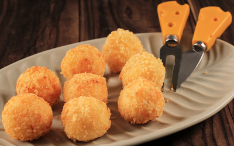Deep-fried rice balls stuffed with meat sauce, peas, and mozzarella cheese, a Sicilian street food favorite.
Ingredients:
- Arborio rice
- Meat sauce
- Mozzarella cheese
- Peas
- Eggs
- Breadcrumbs
- Parmesan cheese
- Vegetable oil
- Salt
- Pepper
Instructions:
1. Cook Arborio rice until tender, then let it cool slightly.
2. Stir in meat sauce, peas, and grated Parmesan cheese.
3. Take a handful of rice mixture and flatten it in your hand.
4. Place a cube of mozzarella cheese in the center and shape the rice into a ball around it.
5. Dip the rice ball in beaten eggs, then coat with breadcrumbs.
6. Deep fry in hot oil until golden brown and crispy.
7. Drain on paper towels before serving hot.
Trentino-Alto Adige Speckknödel
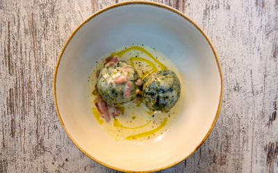Bread dumplings filled with speck (smoked ham) and served in a clear broth, a specialty of the Trentino-Alto Adige region.
Ingredients:
- Bread
- Milk
- Speck (smoked ham)
- Onion
- Parsley
- Egg
- Butter
- Flour
- Vegetable broth
- Salt
- Pepper
- Nutmeg
Instructions:
1. Cube stale bread and soak in milk until softened.
2. Sauté finely chopped onion and diced speck in butter until golden brown.
3. Mix the bread with sautéed onion and speck, then add chopped parsley, beaten egg, and flour. Season with salt, pepper, and nutmeg.
4. Form the mixture into small dumplings and poach them in simmering vegetable broth until cooked through.
5. Serve the speckknödel hot in bowls of hot broth.
Lazio Supplì al Telefono
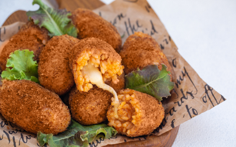Deep-fried rice croquettes filled with mozzarella cheese, a popular street food snack in Rome.
Ingredients:
- Arborio rice
- Tomato sauce
- Mozzarella cheese
- Parmesan cheese
- Egg
- Breadcrumbs
- Vegetable oil
- Salt
- Pepper
Instructions:
1. Cook Arborio rice until tender, then let it cool slightly.
2. Stir in tomato sauce, grated Parmesan cheese, salt, and pepper.
3. Take a small portion of rice mixture and flatten it in your hand.
4. Place a cube of mozzarella cheese in the center and shape the rice into a croquette around it.
5. Dip the rice croquette in beaten egg, then coat with breadcrumbs.
6. Deep fry in hot oil until golden brown and crispy.
7. Serve the supplì hot, allowing the mozzarella cheese to stretch like telephone wires when pulled apart.
Emilia-Romagna Tortellini en Brodo
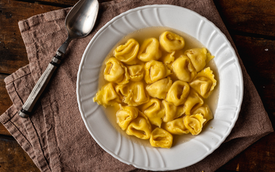Homemade pasta parcels filled with meat and served in a clear broth, a classic dish from Emilia-Romagna.
Ingredients:
- Tortellini pasta
- Chicken broth
- Ground pork
- Ground beef
- Parmesan cheese
- Egg
- Nutmeg
- Parsley
- Salt
- Pepper
Instructions:
1. Make the tortellini filling by combining ground pork, ground beef, grated Parmesan cheese, beaten egg, chopped parsley, salt, pepper, and a pinch of nutmeg.
2. Roll out fresh pasta dough and cut into small squares.
3. Place a small amount of filling in the center of each pasta square, then fold into a triangle and press the edges to seal.
4. Bring chicken broth to a simmer and add the tortellini. Cook until the pasta is tender and the filling is cooked through.
5. Serve the tortellini en brodo hot, garnished with grated Parmesan cheese and chopped parsley.
Campania Sfogliatella
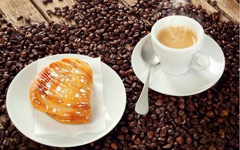Flaky pastry filled with sweet ricotta cheese and candied citrus peel, a signature dessert of Campania.
Ingredients:
- Pastry dough
- Ricotta cheese
- Sugar
- Candied citrus peel
- Cinnamon
- Butter
- Powdered sugar
Instructions:
1. Roll out pastry dough into a thin sheet and brush with melted butter.
2. Sprinkle the dough with a mixture of sugar, candied citrus peel, and cinnamon.
3. Roll up the dough tightly, then slice into rounds.
4. Press each round into a muffin tin, flattening and stretching the dough to form a shell.
5. Fill each pastry shell with sweetened ricotta cheese mixture.
6. Bake in a preheated oven until the pastry is golden brown and the filling is set.
7. Dust with powdered sugar before serving warm.
Puglian Orecchiette with Broccoli Rabe
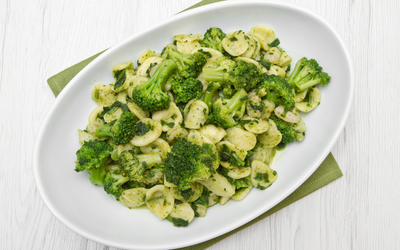Ear-shaped pasta served with sautéed broccoli rabe, garlic, and chili flakes, a staple dish of Puglia.
Ingredients:
- Orecchiette pasta
- Broccoli rabe
- Garlic
- Chili flakes
- Anchovy fillets
- Olive oil
- Parmesan cheese
- Salt
- Pepper
Instructions:
1. Cook orecchiette pasta in boiling salted water until al dente.
2. Meanwhile, blanch broccoli rabe in boiling water, then drain and set aside.
3. Sauté minced garlic and anchovy fillets in olive oil until fragrant.
4. Add broccoli rabe and chili flakes to the pan and cook until tender.
5. Toss the cooked pasta with the broccoli rabe mixture, adding olive oil as needed.
6. Serve hot, garnished with grated Parmesan cheese and black pepper.
Abruzzese Arrosticini
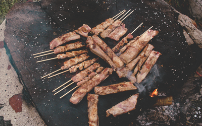Skewers of tender lamb meat seasoned with olive oil, rosemary, and garlic, a specialty of Abruzzo.
Ingredients:
- Lamb meat
- Rosemary
- Garlic
- Olive oil
- Salt
- Pepper
Instructions:
1. Cut lamb meat into small cubes and thread onto skewers.
2. Season the lamb skewers with chopped rosemary, minced garlic, olive oil, salt, and pepper.
3. Let the skewers marinate for at least 30 minutes.
4. Grill the arrosticini over high heat until browned and cooked through.
5. Serve hot, optionally garnished with fresh rosemary sprigs.
Friuli-Venezia Giulia Jota
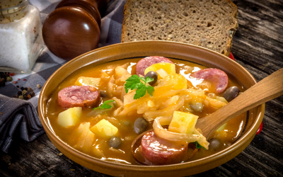A hearty stew made with sauerkraut, beans, potatoes, and smoked meats, a traditional dish of Friuli-Venezia Giulia.
Ingredients:
- Sauerkraut
- Beans
- Potatoes
- Smoked pork ribs
- Smoked sausage
- Onion
- Garlic
- Bay leaves
- Red wine vinegar
- Olive oil
- Salt
- Pepper
Instructions:
1. Sauté chopped onion and minced garlic in olive oil until softened.
2. Add diced smoked pork ribs and smoked sausage to the pot and brown on all sides.
3. Stir in sauerkraut, drained beans, diced potatoes, bay leaves, and red wine vinegar.
4. Add enough water to cover the ingredients and bring to a simmer.
5. Cook until the potatoes are tender and the flavors have melded together.
6. Season with salt and pepper to taste before serving hot.
Calabrese Spaghetti alla Calabrese
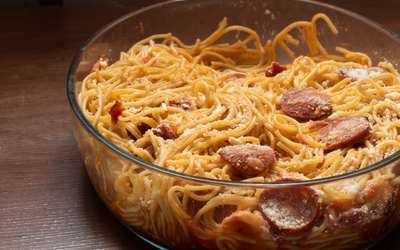Spaghetti tossed with spicy 'nduja, cherry tomatoes, and pecorino cheese, a fiery Calabrian pasta dish.
Ingredients:
- Spaghetti
- 'Nduja
- Cherry tomatoes
- Garlic
- Pecorino cheese
- Olive oil
- Basil
- Salt
- Pepper
Instructions:
1. Cook spaghetti in boiling salted water until al dente.
2. Meanwhile, sauté minced garlic in olive oil until fragrant.
3. Add 'nduja to the pan and cook until melted and spicy.
4. Stir in halved cherry tomatoes and cook until softened.
5. Toss the cooked spaghetti with the 'nduja sauce, adding pasta water as needed to loosen.
6. Serve hot, garnished with grated pecorino cheese and torn basil leaves.
Marche Coniglio in Porchetta
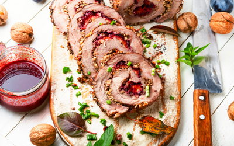Rabbit marinated with garlic, rosemary, and fennel seeds, then roasted until tender, a specialty of Marche.
Ingredients:
- Rabbit
- Garlic
- Rosemary
- Fennel seeds
- Lemon zest
- White wine
- Olive oil
- Salt
- Pepper
Instructions:
1. Combine minced garlic, chopped rosemary, crushed fennel seeds, lemon zest, white wine, and olive oil to make the marinade.
2. Rub the marinade all over the rabbit and let it marinate for at least 2 hours, preferably overnight.
3. Preheat the oven to 350°F (175°C).
4. Place the marinated rabbit in a roasting pan and season with salt and pepper.
5. Roast in the preheated oven until the rabbit is cooked through and golden brown.
6. Serve hot, garnished with fresh rosemary sprigs and lemon wedges.
Sicilian Cassata
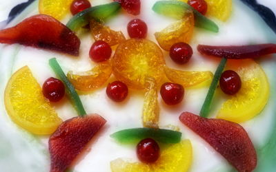A festive cake made with sponge cake, sweetened ricotta cheese, candied fruit, and marzipan, a traditional Sicilian dessert.
Ingredients:
- Sponge cake
- Ricotta cheese
- Sugar
- Candied fruit
- Marzipan
- Dark chocolate
- Pistachios
- Almonds
Instructions:
1. Slice the sponge cake horizontally into layers.
2. Mix ricotta cheese with sugar until smooth, then spread over the sponge cake layers.
3. Sprinkle candied fruit over the ricotta cheese layer.
4. Stack the cake layers on top of each other, then wrap in marzipan.
5. Decorate the top of the cassata with dark chocolate, pistachios, and almonds.
6. Chill in the refrigerator for at least 4 hours before serving.
Piedmontese Bagna Cauda
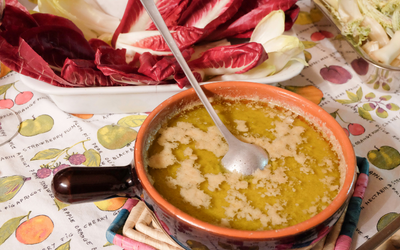A warm dip made with anchovies, garlic, olive oil, and butter, served with raw vegetables, a traditional dish of Piedmont.
Ingredients:
- Anchovy fillets
- Garlic
- Olive oil
- Butter
- Assorted raw vegetables (such as carrots, celery, fennel, and bell peppers)
Instructions:
1. Heat olive oil and butter in a pan over low heat.
2. Add minced garlic and anchovy fillets to the pan, stirring until the anchovies dissolve.
3. Continue cooking until the garlic is soft and fragrant.
4. Serve the warm bagna cauda in a fondue pot or bowl, surrounded by assorted raw vegetables for dipping.